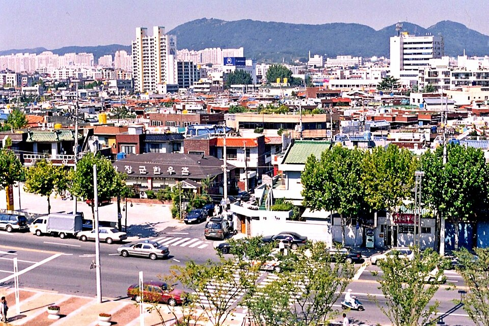

지역·학습팁
대구 달서구 검정고시 — 국어·영어, 읽는 힘으로 같이 올리기

달서구 검정고시를 준비하면서 국어와 영어를 서로 다른 공부라고 생각해 따로따로 붙잡는 분이 많습니다. 그런데 두 과목이 요구하는 힘은 결국 같아요. 문장을 끝까지 읽고, 무엇을 묻는지 알아채는 것입니다. 묶어서 하면 시간이 줄어듭니다.
국어: 지문을 다 읽기 전에 질문부터 봅니다
- 문제 먼저, 지문은 그다음 — 무엇을 찾아야 하는지 알고 읽으면 같은 지문도 절반의 시간에 풀립니다.
- 한 문단에 한 줄 요약 — 문단마다 “이 문단은 무슨 말인가”를 한 줄로 적어 보면 글의 뼈대가 보입니다.
- 모르는 낱말은 통째로 — 뜻만 외우지 말고 그 낱말이 들어간 문장째로 적어 둡니다.
영어: 단어 → 문장 구조 → 지문 순서
영어가 막히는 분은 대개 단어에서 멈춰 있습니다. 하지만 단어만 1년을 외워도 문장은 안 읽혀요. 기본 단어를 어느 정도 모은 다음에는 곧바로 짧은 문장으로 넘어가야 합니다. 주어와 동사를 찾는 연습, 그다음 한 문장씩 해석하는 연습, 그러고 나서 지문으로 갑니다. 국어에서 익힌 “문단 한 줄 요약”을 영어 지문에도 그대로 쓰면 낯설지 않습니다.
하루에 두 과목을 나눠 넣는 법
- 머리가 맑은 시간엔 영어 — 새로 익히는 부담이 큰 과목을 앞에 둡니다.
- 늦은 시간엔 국어 지문 한 개 — 읽는 연습은 지쳐 있어도 이어가기 쉽습니다.
- 주말엔 기출로 점검 — 배운 방식이 실제 문제에서 먹히는지 확인합니다.
검정고시는 전 과목 평균 60점 이상이면 합격이고, 60점을 넘긴 과목은 과목 합격으로 남습니다. 국어와 영어가 자리를 잡으면 평균을 받쳐 주는 축이 두 개 생기는 셈이에요.
달서구에서 이렇게 함께합니다
저희는 1:1 맞춤 과외라 두 과목을 각각 어디서 막혔는지 먼저 확인하고 시작합니다. 영어는 단어부터인지 문장 구조부터인지, 국어는 어휘인지 읽는 속도인지에 따라 출발점이 달라져요. 상인동·월성동·이곡동 등 달서구 안에서는 방문 수업이 가능하고, 시간을 아끼고 싶으면 화상(줌) 수업으로도 진행합니다.
두 과목을 따로 붙잡지 않아도 됩니다. 지금 어디서 막히는지만 알려주시면 국어·영어를 한 흐름으로 묶은 계획을 무료로 짜 드립니다. 시험 일정은 뉴스 첫 화면의 일정 안내를 확인해 주세요.